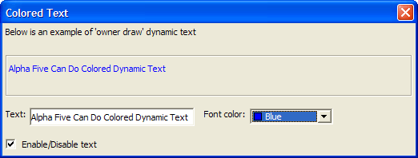

Colored Dynamic Text
Unlike the example in the Colored Static Text topic, the color for the text to be displayed in the dialog is contained in the variable font_color. The background color is also determined by a variable, background_color, but it is hard coded to "Win3d".
dim text as C dim formatted_text as C text = "Alpha Anywhere Can Do Colored Dynamic Text" font_color = "Dark Blue" background_color = "Win3d" flag = .t. formatted_text = "{B="+background_color+"}" + "{C="+font_color+"}" + text ui_dlg_box("Colored Text",<<%dlg% Below is an example of 'owner draw' dynamic text; {lf}; {frame=1,1} {text=%O={@@}%100,3:formatted_text?flag}; {lf}; Text: [.40text!change] Font color: [%c%.20font_color!change]; {lf}; (flag) Enable/Disable text; %dlg%,<<%code% if (a_dlg_button = "change") then a_dlg_button = "" formatted_text = "{B="+background_color+"}" + "{C="+font_color+"}" + text end if %code%) |
Note how the (flag) check box sets the flag variable, which enables or disables the dynamic text.

Next
See Also
Limitations
Desktop applications only.